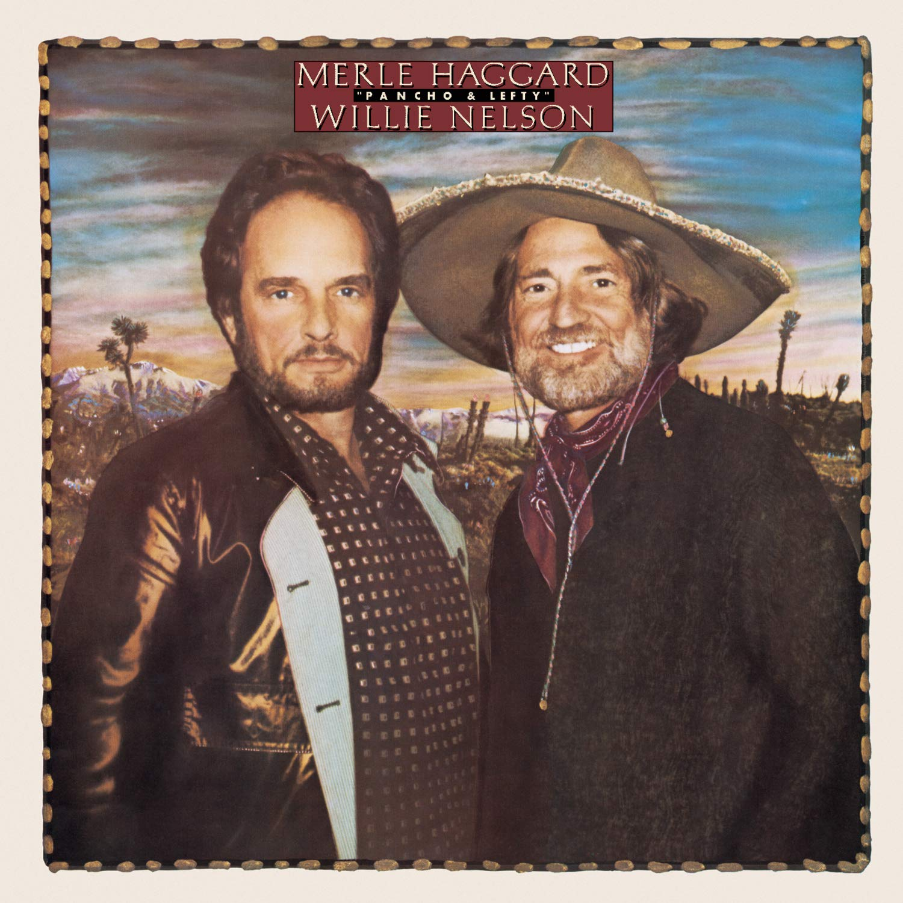

Lexicon of Song:
“Pancho and Lefty”
A song written by Townes Van Zandt in 1972
02 Nov 2023 · 7 min read
I’ve already written about “Long Black Veil,” which was one one of my father’s favorite songs.
So I’m probably overdue to write about “Pancho and Lefty,” which was one of my father-in-law’s favorites – and one of mine as well.
A bit like “Hallelujah,” by Leonard Cohen, this song seems to have had an interesting life of its own.
It was written by Townes Van Zandt, a legendary Texan singer/songwriter, and first released on his album The Late Great Townes Van Zandt back in 1972.
Neither the song nor the album received a whole lot of attention at the time, let alone any accolades.
Then Emmylou Harris recorded it on her album Luxury Liner in 1977, giving the song a bit more exposure.
And then, finally, Willie Nelson and Merle Haggard recorded it in 1983, and released it as a single, which promptly became a huge hit for the pair. As the story goes, Willie Nelson’s daughter introduced the song to them.
While the earlier recordings are sincere and heartfelt, there is no denying that the Nelson/Haggard recording has become the definitive version, with the vocals and instrumentation bringing out all the nuance and details of the song.
While Cohen spent years working on the lyrics to “Hallelujah,” Van Zandt said of this song “I realize that I wrote it, but it’s hard to take credit for the writing, because it came from out of the blue.” And then Nelson and Haggard recorded their incredible version over the course of an evening, and then shipped it off to the record company the next morning. So in both cases, the music seemed to just flow for the artists without seeming effort.
However these creative acts happened, though, there’s no doubt that both the song itself and the Nelson/Haggard recording are about as good as it gets, both for songwriters and for singers and recording artists.
Before we dive in to the lyrics, a couple of notes: the spelling of the first name has evolved over the years, starting out as “Poncho,” and then later becoming established as “Pancho.” And although the Pancho character in the song may have been partly inspired by the life of Pancho Villa, no sort of historical accuracy was intended.
Certainly one of the themes to be found in the song is the continual unfolding of time, contrasting innocence and experience, comparing our original ideas and intentions with our eventual acts and their consequences.
Notice how the story plays out like a relay of some kind, with each character having their moment on the stage, but then passing the baton on to another.
This all happens in a dreamlike manner, and so it is not too surprising that the song just came to Van Zandt, without conscious thought.
Notice also how the action of the song is generally described in the past tense, even though our understanding of the future time from which the story is told evolves as the song progresses.
So now, here we go.
Living on the road, my friend,
Was gonna keep you free and clean;
Now you wear your skin like iron,
And your breath’s as hard as kerosene.
Who is speaking, and who is the friend? It could well be Van Zandt talking to himself, or Nelson and Haggard talking to themselves, or any concerned friend talking to any performing singer/musician. Or someone talking to a friend who has chosen the life of a bandit. This song was written at the start of what would become known as the Outlaw Country movement, both because its practitioners were intentionally working outside the traditional confines of the Nashville recording business, but also because they often identified with outlaws.
Notice though, that we already have the unfolding of time, contrasting the innocence of the friend’s original intention – keeping free and clean – with his eventual experience – skin as hard as iron, breath like kerosene.
And now the baton gets passed to the mother of our character.
You weren’t your mama’s only boy,
But her favorite one, it seems:
She began to cry when you said goodbye,
And sank into your dreams.
More time unfolding, with the innocent expectations of a mother contrasting with the dreams of her son, leading to his departure.
And let us pause to appreciate the unusual phrasing, saying that the character sank into his dreams. The words imply the power of the character’s subconscious, pulling him downward with the unrelenting force of gravity: so much being said, in so few words.
And now the baton gets passed to Pancho. Is this the same character whose mama cried when he said goodbye? I tend to think so. But no matter. In any case, it is a new scene, a new chapter.
Well Pancho was a bandit boy,
His horse was fast as polished steel.
He wore his gun outside his pants
For all the honest world to feel.
Here, even though Pancho was a bandit, he’s presented in a romantic fashion. He’s not pretending to be anything other than what he is, and he’s got the stuff it takes to be a successful bandit: the fastest horse, and so on. Was this how Van Zandt thought of himself? Certainly many others thought of him as having the best songwriting. And Nelson and Haggard recorded their version in Nelson’s studio at his home in Texas, without any aid from anyone in Nashville.
Pancho met his match, you know,
On the deserts down in Mexico.
Nobody heard his dying words;
Ah, but that’s the way it goes.
Pancho leaves the stage as quickly as he entered. Again, we have the rapid unfolding of time, with Pancho’s success as a bandit giving way to his lonely demise.
And now the baton is passed to the Federales, the federal forces charged with the enforcement of the law and the maintenance of social order.
All the Federales say:
They could have had him any day.
They only let him slip away…
Out of kindness, I suppose.
And even though they presumably had a hand in stopping Pancho’s exploits, this group is presented as a sad and ineffective bunch, quick to brag about their supposed accomplishments, but apparently not so quick or eager to face Pancho head-on, and apparently not equipped with the fastest horses.
And now the baton is passed to Lefty.
Lefty, he can’t sing the blues
All night long like he used to.
The dust that Pancho bit down south
Ended up in Lefty’s mouth.
And here the baton actually takes physical form, as the dust is passed from Pancho to Lefty.
The day they laid poor Pancho low,
Lefty split for Ohio.
Where he got the bread to go,
There ain’t nobody knows.
And so it’s clearly implied that Lefty betrayed Pancho, apparently telling the Federales where he could be easily ambushed (perhaps not unlike the way in which outlaws Bonnie and Clyde were betrayed and gunned down, as depicted in Arthur Penn’s film from 1967). Again, so much being said with so few words, so little explicit description of the events that transpired.
And now more tired bragging from the Federales.
All the Federales say:
They could have had him any day.
We only let him slip away
Out of kindness, I suppose.
And now Haggard’s voice comes in, bringing the story to a close, of sorts, revealing the further unfolding of time.
The poets tell how Pancho fell,
And Lefty’s living in a cheap hotel;
The desert’s quiet, Cleveland’s cold:
And so the story ends we’re told.
So now this poet distances himself from the poets who tell how Pancho fell, implying that he’s not one of those who mythologizes and romanticizes such stories, supplying neat endings in order to provide his listeners with a satisfying tale.
And so, true to his word, this songwriter supplies an altogether different and unexpected ending.
Pancho needs your prayers, it’s true,
But save a few for Lefty too:
He only did what he had to do,
And now he’s growing old.
And so, the singer seems to imply, time inexorably unfolds for us all, starting with the purity of innocence, but ending with the gritty reality of experience. And who can say which of our characters got the better of their encounter in the desert? Lefty got the money to go back to the cold of Ohio, living out his days in a cheap hotel, waking each day to the unrelenting shame of his betrayal, no longer with a song to sing, not even an honest blues. And while Pancho bit the dust, he died without ever being untrue to his own character, and as a result the poets are still singing about him, recounting tales of his exploits.
But now, even after this apparent conclusion, the last delivery of the chorus makes it clear that time is still unfolding, with the events of the song receding further into the past, the tale now only being told by a few aging federales.
A few gray Federales say:
We could have had him any day;
We only let him go so long…
Out of kindness, I suppose
This is such a great song, so exquisitely written, using common language familiar to anyone who cares to listen, but with one surprising event and scene and image and turn of phrase after another. The song is itself a story – although one told very unconventionally – but it is also about story, suggesting that we are all authors of our own stories, and that we should take care what we write, for in the end the stories are what we are left with, and what we leave behind.
Dedicated to Clendon Hendrickson, whose story is still told, and whose exploits are still recounted.